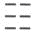
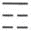

第三节
先秦诸子学术思想
这里主要集中介绍儒、道、墨、法几家的重要思想，尤其是以儒、道二家为重点，但并非全面评价。
一、儒家
1．孔子创立儒家学说
孔子名丘，字仲尼，是春秋末期的思想家、教育家。父亲为鲁国大夫，早死，家世中落。孔子一生在政治上并不顺利，50岁后担任过鲁国高级官职，但时间不长。此后以教书为业。曾带领学生周游列国，推行自己的学术思想和政治主张，但始终未能如愿。晚年致力于教育事业，整理《诗》、《书》等古代文献。孔子是当时大规模私人办学的开创者，他继承了西周以来注重道德的文化传统，从伦理、政治、哲学、教育等各个方面加以提高，形成系统的理论学说，创立了儒家学派，对中华民族的文化发展做出了重大贡献。（图9—2）
图9-2 传唐吴道子绘《先师孔子行教像》
孔子的思想学说集中反映在《论语》一书中。《论语》主要是他的弟子对他言行的记录。
2．儒家的思想核心：仁和礼
孔子把以前“敬亲尊长”“爱众庶”“忠君主”等属于“仁”的道德发展为仁学。什么是“仁”？可以归纳为以下四点：
（1）“樊迟问仁，子曰：爱人。”同别人相友爱，这是仁的基本点。
（2）“子曰：克己复礼为仁。一日克己复礼，天下归仁焉。”孔子在这里主要针对那些野心膨胀的诸侯国国君，告诫他们要约束自己，服从周天子的统治。哪怕只做到一天，天下人也都会归顺这种有道德的人。孔子主张恢复周礼反映了他保守的一面。但是也不宜把他说成是“反动的”。我们全面考察孔子就会发现孔子在宣传“复礼”的同时，也强调对周礼要有所“损益”，并非全盘照搬。奴隶社会的教育是“学在官府”，奴隶主贵族把持着教育，普通平民没有受教育的权利。孔子带头大规模私人办学，用实际行动冲破旧的奴隶制度的束缚，是有进步意义的。可见孔子思想有保守的一面，同时也有大胆革新的行动。
（3）“子曰：夫仁者，己欲立而立人，己欲达而达人。”对于有道德的人，不仅自己想要取得成就、在世上有自己的地位，而且也会帮助别人取得成就而在世上有立足之地；不仅自己希望顺利通达，而且也帮助别人顺利通达。
（4）推人及物，将人类的道德关怀推及到自然万物。对今天尊重和保护自然生态环境具有重要的现实意义。孔子告诫人们应该：“钓而不纲，弋不射宿。”并且说：“智者乐水，仁者乐山。”孟子对此说：“亲亲而仁民，仁民而爱物。”［3］可见，儒家不仅强调人与人之间应该建立和谐的关系，而且也关注人与自然之间应该和谐相处，因此对于生态环境采取的是积极爱护的态度。
为什么孔子创立的以“仁”为核心的伦理观念对中华民族能产生深远影响？
（1）“仁”具有崇高的道德境界，但又很容易做到。孔子说：“仁远乎哉？我欲仁，斯仁至矣。”又说：“为仁由己，而由人乎哉！”只要自己有愿望树立“仁”的道德，付诸实践去做，这种道德就在自己身上具备了。对于树立仁的道德，不需要天资和学识，也不需要富有钱财，更不需要政治地位，关键是自己付诸行动。
（2）“仁”兼顾人我两方面，最有利调节人与人的关系。仁，一方面要求自立自达、自强不息，又要求立人达人，是助人为乐、成人之美。既有对自己的勉励和约束，也有对他人的关心和帮助；既否定了利己主义，也不是苦行僧式的利他主义。所以，仁这种道德可以使人际关系处于最和谐的状态。
（3）没有特别的条件，也不需要改变人的正常生活，就可具备仁的道德。无论是饮食、婚姻、习俗等等，都不必改变，体现了对人的生存权利的最大尊重。
（4）儒家提倡的仁政，要求统治者对人民应该宽容施惠，在一定程度上反映了人民的呼声，同时也符合封建统治者的长远利益。因此，儒家提倡的以“仁”为核心的伦理道德观念能够深入人心，对中华民族产生长达两千年之久的深远影响。
“礼”是指儒家提倡的行为准则和礼仪制度。仁和礼是一个整体，共同构成儒家学说的核心。它们的关系是：仁是内在的精神，礼是外在的表现；仁是追求的目标，礼是实现目标的途径。
3．孔子的天命观和鬼神观
孔子多次提到“天”和“天命”，不免让人感到有宿命论的思想。我们应该全面看待孔子关于天和天命的思想。
孔子对于“天”有两种不同态度。在他着急赌咒或感慨悲痛的时候，往往口中呼出有意志、有神灵的天。他带领学生周游列国，到了卫国，为了推行儒家主张，他直接去找南子。对此，学生子路极为不满。因为南子是卫灵公最宠爱的女人，她把持国政并且在男女作风上不检点，名声很不好。孔子从内廷出来后，极力向学生们表白，说：我若做出错事，“天厌之！天厌之！”。当孔子最喜欢的学生颜渊年轻轻就死了，孔子非常悲伤，他捶胸顿足地哭道：“天丧予！天丧予！”意思是：老天要我的命啊！孔子在这些地方呼出的“天”都是有意志、有神灵的天。但是，孔子也曾冷静地谈到对天的看法，他说：“天何言哉！四时行焉，百物生焉，天何言哉！”显然，孔子这里所说的天是完全自然的天，这才是孔子对天的真实评价。
孔子的儒家学说本是强调人应该奋发有为，通过提高道德修养解决各种问题，因此并不赞成迷信鬼神、依赖鬼神。当学生问及死后和鬼神之事时，孔子说：“未能事人，焉能事鬼。”还说：“未知生，焉知死。”实际上是一种回避态度。儒家注重利用祭祀等礼仪活动来区分人的贵贱尊卑，因此并不绝对否认鬼神的存在，不想冒犯鬼神，但同时又强调人的“有为”，所以孔子说：“敬鬼神而远之，可谓知矣。”
由孔子确定下来的儒家鬼神观对中华民族有着深远的影响，使得中国人没有单一的、绝对的宗教信仰，可说是：又信又不信。往往是遇到难处了，例如婚姻、求职、考学、疾病等，便去寺庙祈求神灵保佑，这时内心是很虔诚的，但是很难坚持一辈子都去烧香磕头。尤其是对于剃发出家等成为纯粹的宗教徒，一般的中国人都会认为是一种非正常的行为而难以接受。又由于没有单一的宗教信仰，所以也可以同时接受几个宗教。人们可以在佛教寺庙烧过香后，又去道教宫观磕头，或许还随着别人去基督教堂去参加礼拜活动。大多数中国人心想，这些宗教既然都是宣扬行善，就没有什么根本的冲突，可以同时信奉。于是在某些寺庙等处出现了儒、佛、道三家教主并排站在一起，也就不足为奇了。例如，四川的大足石窟就有五代时雕造的释迦牟尼在中，孔子和老子并列两旁的造像。这种情况，在山西恒山的悬空寺等处也都存在，并不十分罕见。这正反映出中国传统文化中儒、释、道三家合流的特征。《红楼梦》中，贾宝玉要读儒家的四书五经、参加科举考试；在他心情不痛快时，情不自禁地手持《南华经》（《庄子》）读了起来，企图从道家思想中获得解脱；可是他还与妙玉、黛玉等人参禅，这又是佛家的行为了。对于贾宝玉的这些描写，读者感觉顺情合理，就是因为符合中国人的文化心理。
4．孔子对文化教育的贡献
孔子删定诗书，以六经教授学生，整理和保存了中国古代的文化典籍，这是孔子的一大贡献。孔子是大规模私人办学的开创者，发展了古代教育理论，积累了丰富的教育经验，成为中国古代教育思想和实践的奠基人。（图9—3）
图9-3 孔子讲学图
理论上，他强调教育的不可替代的社会作用，他说：“道之以政，齐之以刑，民免而无耻；道之以德，齐之以礼，有耻且格。”行政和刑罚虽然能令民众不敢做坏事，但他们没有羞耻之心；如果用道德和礼制教育民众，他们就具有羞耻之心和行为准则。
孔子的教育目的是突破奴隶主贵族对教育的垄断，他带头推行大规模私人办学，将教育推向全社会，这些应该给予充分肯定。在孔子的学生中，既有贵族、富商，也有平民百姓，甚至还有地位低下的贱民，除了奴隶，真可谓是“有教无类”了。
孔子针对奴隶主贵族及其子弟不学无术、利用特权就可以世袭官爵，强调应该先具备文化知识和管理才能，然后再去做官。所以他说：“学而优则仕。”这和“读书做官”论完全挨不着边儿。他说：“先进于礼乐，野人也；后进于礼乐，君子也。如用之，则吾从先进。”意思是：那些先学习礼乐后做官的，是普通平民；而先做官后学习礼乐的，是上层的贵族子弟。如果我来选用人才，我选先学习礼乐的人。孔子在平民中选拔人才任用他们做官，正是突破了奴隶主贵族的特权。
孔子的教育内容很丰富，既有德育也有智育，集中地体现了儒家学说的主要内容，它们极大地丰富了中国传统文化中关于德治、德教的理论，但同时也应该看到其中存在严重的局限性，例如轻视生产劳动、忽视自然科学等，尤其是把妇女与小人同等看待，实在没有道理。
5．战国时期儒家的孟、荀学派
孔子所创立的儒家学派在春秋战国的诸子百家中仅是其中的一家，当时并未显露出它在学术上、政治上占有什么特殊地位。孔子死后，儒家逐渐分为八个流派。《韩非子》中就提到，在战国时期有“子张之儒、子思之儒、颜氏之儒、孟氏之儒、孙氏之儒”等等。他们有的也撰写著作，在《汉书·艺文志》的《诸子略》中就记有《子思子》、《曾子》、《漆雕子》、《孙卿子》（即《荀子》）等书。这些著作在当时并未被视为经典，有的甚至不久就失传了。在这八派之中，以孟子（他属于子思门人的弟子）和荀子两派影响最大，他们在孔子学说的基础上有了不同侧重的继承，最终使他们朝着完全不同的方向发展下去。这里不打算对孟子、荀子两个学派作全面的评介，下面把二者的主要思想作一比较，也可使人留下大致印象。
孟子主要继承了孔子“仁”的学说，强调人的修身养性。荀子则主要继承了孔子“礼”的学说，强调“礼”是区别贵贱尊卑的规矩、准绳，宣扬以礼治来端正等级名分，用刑法对付各种反抗行为（此中已有法家思想因素，难怪法家的代表人物韩非以及李斯都曾是荀子的学生）。
孟子提出“人性善”论，为孔子提倡的“仁”提供了理论基础。孟子用“恻隐之心人皆有之”［4］证明人的本性是善良的，因此可以具备仁的道德。可是也有人道德低下、做了坏事，那是由于后天受到不良环境影响所致。因此要通过教育，使人的本性不致受蒙蔽。荀子提出“人性恶”论，认为人的本性是凶恶的，肚子饿了就要吃，感到冷了就要穿，其本性是首先想到自己的需要。但是他们马上也会想到父母、朋友是否需要，这是因为后天受到教育、懂了礼的结果。孟子、荀子二人对人性的评价虽然相反，但最终他们又都一致强调后天教育的重要作用。（图9—4）
图9-4 山东邹县亚圣孟庙
孟子主张“法先王”，即应该效仿、学习过去的圣贤，他们在为人、治国等方面是后人的榜样。荀子则主张“法后王”，即应该向当代的圣贤学习。过去的圣贤再高明，他们也只是解决了过去的问题，现在有了新的问题，就需要新的圣贤用新的办法来解决。
由于孟子注重人的主观精神作用，在儒家哲学中形成一个唯心主义思想体系。荀子学说中有许多朴素的唯物主义思想，成为先秦诸子中唯物主义的代表。
6．儒家的经典及其演变
在长达两千多年的中国封建社会中，封建地主阶级把儒家学说奉为统治思想。它们利用这个精神武器巩固了自己的统治地位、发展了封建文化，最后也用它来摧残新的民主思想的萌芽，阻止近代科学文化的发展。在中国封建社会里，曾经长时期地习惯于把儒家的一些重要著作视为经典，把它们称为“经”。
“经”是什么意思？东汉文字学家许慎在《说文解字》中说：“经，织也。”清朝学者段玉裁注解说：“织之从（纵）丝谓之经，必先有经而后有纬。”就是说，经是指织布时的竖线，只有先把竖线排好，才能用横着的纬线织出布来。古人由此引申认为，儒家宣扬的封建思想及其有关著作是封建秩序得以维持的根本保证，是封建意识形态的核心，起着极为重要的作用，因此把它们称为经。东汉班固在《白虎通义》中进一步发挥说，经即是“常”、“常道”的意思，也就是指永恒不变的道理。封建统治者希望通过永恒的“经”，达到封建社会永久存在的目的。
其实把典籍称之为经，最初并不始于儒家著作。我们从《庄子》、《国语》等书中看到，先秦时期的经书并非专指儒家著作，例如庄子就把墨子的著作称为《墨经》。以后随着封建思想文化的发展，统治者出于政治上的需要，逐渐把经书限于儒家的重要典籍。这就是到了西汉武帝时，朝廷确立了“罢黜百家、独尊儒术”的方针，并且设立了五经博士，从此儒家的思想及其著作便上升到唯我独尊的“经典”地位了。
据《庄子·天运篇》记载，孔子说他自己研究《诗》、《书》、《易》、《礼》、《乐》、《春秋》等六部经书。对于这些经书，在战国和西汉时期已经有专门的著作对它们加以解释，阐明其经义，当时习惯上称这样的著作为“传”或“记”。传、记的出现，开创了训解、阐述儒家经典的所谓经学。在漫长的中国封建社会中，随着经学的发展，产生了许多流派，它们的争辩、分合常常同当时的封建政治及哲学思想、伦理观念的起伏变化紧密联系在一起。可以说，经学对中国封建社会的巩固、发展和延续起着重要作用，对封建的史学、文学、艺术的发展也有着深刻的影响。
二、儒家经典的形成
1．十三经及四书的形成
两千年来，宣扬儒家思想的典籍浩如烟海。在清朝的《四库全书总目》中著录的经部书籍已达一千七百余部，约两万卷。不过作为重要经典的儒家著作，最初只有六部，即所谓的六经。后来发展为十三部，就是通常所说的“十三经”。下面对这些经书由六部逐步增加为十三部的演变作些介绍：
（1）六经
这是指孔子教学生的六经，即《诗》、《书》、《礼》、《乐》、《易》、《春秋》。其中的《乐》早在战国后期即已失传。对于这六经的作者究竟是谁，在经学史上自汉朝以来就存在两种不同的观点。有一派学者即今文经学派（关于经学的今文、古文两学派的产生、争论等问题，下文还要专门讲述）认为，六经都是孔子根据古代文献资料进行整理、编著而成的，是先有孔子而后有六经的，因此有孔子著作六经之说。但是另一派经学家即古文经学派则认为在孔子之前已有六经，是周公所作，孔子只是对这些经典进行了删定。对于这两种对立的观点，长久以来争论不休。实际上两种意见都有片面之处。一方面不应该为了推崇孔子而硬说六经是孔子著作的；另一方面，虽然孔子之前存在有关于六经方面的著作，但也未必就是周公著作的。对于今天的研究者来说，更注重的是六经本身的历史文献价值。
（2）五经
由于《乐》在战国时期已经失传，所以汉武帝时只立了《诗》、《书》、《礼》、《易》、《春秋》等五经博士。这些博士都是对其中某一部经书有专门研究的学者，他们并且传授学生。
（3）七经
由于汉朝统治者标榜“以孝治天下”，至东汉时，又在五经之外把《论语》、《孝经》定为读书人必读之书，这样儒家的经典便扩大为七经了。
（4）九经
到了唐朝，在国家官办学校的学习科目中以及科举考试项目中，又有九经之说，这就是《诗》、《书》、《易》、《周礼》、《仪礼》、《礼记》、《春秋公羊传》、《春秋穀梁传》、《春秋左氏传》等九部经书。显然在七经、九经中，已经把古代阐述经义的一些《传》、《记》也包括到经的范围之内了。在唐代，《论语》和《孝经》是要求所有读书人都要研读的，称之为“兼经”。
（5）十二经
唐文宗开成年间（827—840年），朝廷下令把九经以及《论语》、《孝经》、《尔雅》都刻在石碑上，总共十二部书，称为十二经。这些经书刻石至今保存下来，就是有名的“开成石经”。（图9—5）
图9-5 唐开成石经，今存西安碑林
（6）十三经和《十三经注疏》
在宋朝，理学家们把《孟子》也提高到经书的地位。北宋哲宗元祐年间的科举考试中就包括《孟子》了。从此儒家的经典便成了十三经，直到封建社会终结，再也没有变化。对于这十三部儒家的经传，汉朝及其后的学者们做了大量的注释工作，人们称之为注或笺。唐朝时期，由于时间久远，人们对汉代的注释也难于理解了，于是一些学者对前人的旧注也要进行解释和阐发，习惯上就称之为“疏”或“正义”。南宋以后有人把十三经以及比较好的注、疏、正义合刻在一起，形成一整套经书及其注文，称为《十三经注疏》。这十三部经书的注疏作者如下：
《周易》魏王弼、韩康伯注，唐孔颖达等正义；
《尚书》伪孔安国传，唐孔颖达等正义；
《诗经》汉毛亨传，汉郑玄笺，唐孔颖达等正义；
《周礼》汉郑玄注，唐贾公彦疏；
《仪礼》汉郑玄注，唐贾公彦疏；
《礼记》汉郑玄注，唐孔颖达等正义；
《春秋公羊传》汉何休注，唐徐彦疏；
《春秋穀梁传》晋范宁注，唐杨士勋疏；
《论语》魏何晏集解，宋邢昺疏；
《孝经》唐玄宗注，宋邢昺疏；
《孟子》汉赵岐注，宋孙奭疏；
《尔雅》晋郭璞注，宋邢昺疏。
宋代封建统治者把《孟子》提升到经的地位后，又以《礼记》中的《中庸》、《大学》两篇与《论语》、《孟子》相配合，称为《四书》，教授儒生。到南宋孝宗时，理学家朱熹撰成《四书章句集注》，从此《四书》便成为封建科举取士的标准读本了。
2．十三经及四书简介
（1）《周易》
原称《易》，又称《易经》，是古人卜卦用的书。周朝统治者习惯用蓍草来占卜吉凶，称为占筮。占卜时根据该草茎数量的奇、偶，排成各种卦，再参照占筮书的记述，判断出吉凶。因为成书于西周初年，人们又称之为《周易》。
《周易》中用“”和“”两个最基本的符号代表阳和阴，分别称为阳爻、阴爻。把和叠列三层，可以形成八种组合形式，叫做八卦，又称经卦。这八卦的每一卦象代表某种事物，如乾（）为天，坤（）为地，震（）为雷，巽（）为风，坎（）为水，离（）为火，艮（）为山，兑（）为泽。对于每一卦象的含意还可以进一步引申，例如乾既代表天，又可以代表国君、朝廷、君子、男人、刚健、阳气等。而坤除了代表地外，还可以代表臣子、女人、柔弱、阴气等等。用八卦的卦象两两重叠，又能组合成六十四卦，称为别卦。在《周易》中，对于每一卦以及卦中的各爻，都有阐述其意义的解说，这就是卦辞和爻辞，它们是《周易》的正文部分。
《周易》的作者和著作时代是怎样的？
古代曾有伏羲氏、神农氏推演八卦的说法，那只是传说，并不可信。近代学者们根据卦辞、爻辞记载的一些历史材料，比较有把握地推断这部书是西周初年的作品，但具体的作者仍然难以判断。现今传世的《周易》中，还包括解释经文的传，称为十翼。十翼是由《彖传》上下、《文言》、《系辞》上下、《说卦》、《序卦》、《象》上下、《杂卦》等十部分组成的。十翼的作者并非一人，而且也不是作于同一时代。据研究，《彖传》写作最早，似在春秋、战国交替之际，其余的则是战国至西汉初年的作品了。这十翼是儒家后学们对《周易》的解释，未必都能符合经文的原意，因此不能完全依赖它们去理解《周易》的正文。《周易》本是一部占卜算卦的书，但是书中在讲到阴阳二者之间的矛盾变化时，也反映了古人的许多朴素辩证思想。
到了汉朝，《周易》被尊为六经之首，人们认为它包含了其他各经最根本的道理。汉朝在国家学校中教授《周易》的博士就有施、孟、梁丘三家；此外民间还有大约十家，它们都属于不同的流派。20世纪70年代，在长沙马王堆汉墓中曾经出土帛书《周易》的残本。它同今天流行的《周易》相比，虽然六十四卦的卦名全都相同，但是卦的次序却不一样。汉朝的学者们大多以象数之学来讲解《周易》，也就是依据形象和数量来推测自然界的变化对社会政治的影响，因此《周易》常常成为他们预言灾异的工具。
三国时期，王弼改变了大谈象数的风气。他注释《周易》主要是借机阐发自己的哲学思想。王弼在注中糅合了《老子》、《庄子》的道家学说，为魏晋时期的“玄学”发展奠定了思想基础。在古代有大量解说《周易》的著作，除了涉及古代哲学思想的以外，也有一些是宣扬封建迷信的，必须把它们区分开来。孔子把《易》作为教材，是让学生学习其中的哲学辩证法思想。荀子就强调说：“善为《易》者不占”［5］，即善于学习《易》的人，兴趣不在占卜上。
（2）《尚书》
原来仅称为《书》，是中国夏、商、周时代一些政治文献和传说资料的汇编，其中也包括某些追述更古时代的史事记录，因此它属于政治书。春秋以后，《书》被儒家学者们尊奉为经典。自汉朝开始，又称它为《尚书》。“尚”即是“上”，“尚书”就是指上古时代的史书。孔子选择了重要的政治文献编纂成《书》并作为教材，是让学生学习古人的治国之道。
最初《尚书》中保存的历史文献是很多的。至西汉初年，由山东人伏生传授下来的《尚书》只有28篇了。（图9—6）这部《尚书》是用汉代通行的隶书文字抄写的，所以汉朝人称它为“今文尚书”。传授今文《尚书》的学者们常常利用阴阳五行的观点阐发他们的思想，形成了《尚书》的今文经学派，并且由朝廷立为博士官。西汉中期以后，又多次发现先秦时期用古文字体抄写的《尚书》，人们称之为“古文尚书”。它比今文《尚书》多16篇。东汉学者贾逵、马融、郑玄等人对古文《尚书》做了大量的注释工作。他们多从名物制度、文字训诂等方面解释经文，形成了《尚书》的古文经学派。在汉朝，古文《尚书》未被朝廷所承认，没有能立于学官，以致西晋以后它全部散失，现今只能看到它的篇目名称了。

图9-6 传唐王维作《伏生授经图》
东晋时期，豫章内史梅赜向朝廷贡献了一部《尚书》，共58篇。梅赜根据一些散佚的《尚书》文字，编撰成所谓古文《尚书》25篇，后人称之为“伪古文尚书”。梅赜同时又吸收了原来今文《尚书》的28篇（但被离析为33篇了），共凑成58篇。这就是现今通行的《十三经注疏》本《尚书》，它实际上是由今文《尚书》和伪古文《尚书》两部分合成的。此外，梅赜还贡献出一部《尚书孔氏传》，十三卷，说是西汉经学家孔安国解释《尚书》之作。这部书后来经清朝学者们考订，实系后人伪造，于是称它为伪《孔安国尚书传》，但也收入到《十三经注疏》之中了。
（3）《诗经》
最初只称为《诗》，是中国最早的一部诗歌总集，春秋时期被孔子选为教材，后世称为《诗经》。书中收入了上起西周初年（公元前11世纪）下至春秋中叶（前6世纪）约五百年间的诗歌，保存到现在的作品共305篇。这些诗分为《风》、《雅》、《颂》三大类。《风》是15个诸侯国和地区的民歌，其中有揭露、斥责统治者的残暴压迫的，也有对人民的爱情、劳动等社会生活的歌颂。《雅》又分为《大雅》和《小雅》。《大雅》主要是颂扬周统治者的文治武功，其中有许多内容是涉及周初及“宣王中兴”等有价值的史料。《小雅》多是西周后期和东周初期的作品，内容以反映王室统治危机的政治诗为主。《颂》主要是统治者敬神祭祖的庙堂颂歌。需要指出的是，《风》、《雅》、《颂》三部分在内容上不是截然分清的，它们也有混然交错的情况。这三部分的区别，除了在内容上各有所侧重外，还有音乐方面的不同。一般的说，十五国《风》要配以具有地方特色的民间乐曲歌唱；《雅》大多是用西周都城镐京（今陕西长安县）一带乐调谱曲的；《颂》的配乐表现出庄重、肃穆的特点。古代传说周王朝有定时到民间搜集诗歌的做法，叫做“采诗”、“采风”，这大约就是《诗经》的最早来源。在周朝上层社会的政治活动中，人们常常借用《诗》的一章或一两句来委婉地表达自己的思想。所以孔子曾经告诫他的儿子伯鱼说，不学《诗》便无法和人交谈。
《诗经》传至汉代，有齐、鲁、韩、毛四家。其中前三家都属于今文诗学，西汉时得到朝廷的承认，立于学官，各设了博士官并教授生徒。今文诗学至魏晋以后逐渐衰亡。毛《诗》相传为西汉初年毛亨、毛苌所传授，属于古文诗学。现今传世的是毛《诗》，共311篇，其中有六篇仅存篇名而无诗文。
《诗经》中记载了许多周人早期的开发活动和一些重要的历史事件，因此它不仅作为文学巨著对中国两千多年的文学发展产生了深刻的影响，而且对于中国古代史的研究也具有极为重要的史料价值。1994年，上海博物馆以重金购得一批战国竹简，其中有31支简记载了孔子或其弟子子夏对于诗的论述，谈到人的志、情、言与诗的关系，但没有今本《诗经》小序中有关讽刺与赞美的内容。这批竹简中涉及的《诗》有60篇，其中有六篇佚诗以及数十篇诗曲的篇名，都是今本《诗经》所没有的。竹简中对《诗》的写法和次序也与今本不同，依次写成《讼》、《大夏》、《小夏》、《邦风》。其中七支竹简记载了古代唱诗时乐器伴奏的四声和九个音调。令今天音乐专家惊讶的是，古代音调的表示方法竟与今日如此接近，当是我国音乐史上的重大发现。
（4）《仪礼》
原来只叫《礼》，汉朝时又称它为《士礼》、《礼经》，到了晋代才称为《仪礼》。儒家讲究各种典礼仪式，希望通过“礼”来区分人们的贵贱尊卑地位、维护严格的等级制度，《仪礼》就是详细记载古代各种礼仪的书。传说此书是周公所作，但缺少根据。《史记》等书则认为它出于孔子之手。现代学者一般认为，《仪礼》成书约在东周时期，不过书中记载的各种典礼仪式应该在成书以前就存在了。孔子很注重采辑、整理各国礼仪，他把演习礼仪作为自己教学的重要内容，甚至在他游说列国的路途中，也坚持与弟子们在大树下演习礼仪。现今传世的《仪礼》包括：士冠礼、昏礼、士相见礼、乡饮酒礼、聘礼、觐礼、丧服、士丧礼等，共17篇。它们记载了周朝统治阶级的加冠、婚丧、交际、敬老、宴饮、外交、觐见、祭祀等各种礼仪。
西汉初年，由鲁高堂生传授下来的《士礼》即今《仪礼》17篇，至西汉中期分为戴德（大戴）、戴圣（小戴）、庆普三家礼学，它们都属于今文经学派，朝廷也设立了博士官。1959年在甘肃省武威发现了汉代抄在简上的《礼》多篇，为我们校订今本《仪礼》提供了重要的参考依据。（图9—7）另据《汉书·艺文志》记载，又有《礼古经》56篇，是汉武帝时发现的古文《礼经》，其中有17篇与今文的《仪礼》内容基本相同。至于另外的39篇，汉代称为《逸礼》，早已失传。
图9-7 甘肃武威出土的东汉《仪礼》简
（5）《礼记》
先秦时期，儒家学者们在传习《仪礼》的同时，也传授一些有关的参考资料。这些资料可以进一步解释、补充《仪礼》内容，阐发其经义，人们称之为“记”。当时这种《记》很多，作者也不止一两个人。至西汉时期，礼学家们也都各自选取一些《记》作为讲授《仪礼》的辅助教材。这些《记》流传到东汉中期，只剩下了两种：一种是相传为戴德选辑的85篇本的“大戴礼”；另一种是相传为戴圣选辑的49篇本，称为“小戴礼”。东汉学者郑玄为其中的49篇本作了注解，从而使它的影响越来越大，由原来从属于《仪礼》的地位转变为独立成书，人们称它为《礼记》。在唐代，《礼记》更被列为九经之一，它与《仪礼》、《周礼》鼎足而三，称为“三礼”。
《礼记》是一部儒家关于各种礼仪的论著、杂说汇编。它的内容丰富，大体可以分为以下几个方面：有专为说明《仪礼》的，如《冠义》、《昏义》、《乡饮酒义》等篇；有杂记丧服、丧事的，如《檀弓》、《丧大记》、《问丧》等篇；有记述各种礼节、礼制和守则的，如《投壶》、《礼器》、《明堂位》、《曲礼》、《内则》等篇；有记述孔子言论的（其中有些是托孔子之名来阐发儒家的言论），如《仲尼燕居》、《孔子闲居》等篇；有比较系统地论述儒家某一思想的论文，如《礼运》、《学记》等篇。此外还有一篇属于授时颁政的《月令》，记述了夏历一年十二个月的时令及有关的事物。《礼记》中有些篇章如《大学》、《中庸》等，谈及儒家关于如何修养道德、做人处世的哲学、伦理观念，被宋代理学家编入《四书》中，加以大力宣扬。《礼记》中还有《学记》、《乐记》两篇，从理论上对教育、音乐做了精辟的论述，至今仍可资借鉴。《仪礼》仅仅记载了一些礼仪制度，而《礼记》则更多地论述了这些典礼制度的意义、作用，从理论上阐述了战国末期至秦汉时期儒家的“礼治”思想。《礼记》对于封建统治者强化思想文化统治、利用封建礼教束缚人们的思想言行，可以产生更为深刻的影响，因此它越来越受到历代封建统治者的重视，在儒家经典著作中的地位也不断地上升。
（6）《周礼》
原名《周官》，西汉末年，学者刘歆将它改名为《周礼》。这是一部记载政治制度的书。关于《周礼》的成书，过去古文经学家认为是周公所作，今文经学家则指斥为刘歆伪造。现在一般学者都认为这部书是战国时期的儒家学者搜集了周王室的官制以及春秋时各国政治制度，并根据儒家的政治理想加以增减排比而成的汇编。据《汉书》河间献王本传记载，汉景帝时，河间献王搜集到流散在民间的古本《周官》，才使此书为世人所知。因为这部书是古文经，所以长期遭到古代今文经学家的诋毁。《周礼》记有三百多种所谓周朝的职官，并对其职务做了介绍，其中也牵涉到周代的一些典章制度。全书共由《天官冢宰》、《地官司徒》、《春官宗伯》、《夏官司马》、《秋官司寇》、《冬官司空》等六大部分组成。书中的《冬官司空》早已佚失，西汉时以先秦典籍《考工记》补入。《周礼》一书对后世的政治有较大影响，诸如西汉末年的王莽改制、南北朝时期的宇文泰改革官制以及宋代的王安石变法等，都曾以《周礼》为依据进行政治改革。
近代学者曾以周代铜器铭文中所记职官对照《周礼》的官制进行考察，找出一些不相符合之处，以此证明《周礼》系战国人所杜撰，并非是周朝政治制度的如实记录。然而《周礼》中记述的另外一些制度，又确实在周代实行过，这可以从出土文物和考古学家那里得到一定的证实。因此，这部书至今仍然受到人们的重视。《周礼》是我们研究周代典章制度的重要文献资料。
（7）《春秋》及其三传
“春秋”曾经作为东周各国史书的通称，同时也是春秋时期鲁国史书的专称。现存的《春秋》一书记述了鲁隐公元年（前722）至鲁哀公十四年（前481）共244年间的鲁国历史。据记载，孔子曾对《春秋》进行了修订、整理，并且把它作为教授学生历史知识的重要教科书。相传孔子在修订《春秋》时，曾经运用一些隐微的言辞，暗喻、示意某种深远的意义，后世儒家学者们把孔子这种文笔曲折而含褒贬之意的所谓“春秋笔法”称为“微言大义”。例如《春秋》经于鲁隐公元年下说“郑伯克段于鄢”。《左传》对此则解释说，由于共叔段的表现违背了做弟弟的身份，所以《春秋》经不用“弟”字称呼他；这一事件如同两个国君之间争权，所以用“克”字；又由于共叔段的失败是因郑庄公蓄意逼迫造成的，所以经文不称郑庄公的谥号，而用“郑伯”，以批评他对弟弟有失教诲的错误。不过我们今天看来，《春秋》经的这种“微言大义”被古人过分渲染、夸大了。古代为《春秋》经作的传，流传至今有三部，即《春秋左氏传》、《春秋公羊传》和《春秋穀梁传》。《春秋》经本来有自己的单行本，后来按照编年次序，人们把它同各种传文合并起来，先列经文，后述传文。经文对史事介绍十分简短、概括，所以后世学者都要配合传文加以研读。
《春秋左氏传》又称《左氏春秋》或《左传》。旧传作者为春秋时的左丘明，近代学者们根据《左传》中所述史事，认为它当成书于战国初年。《左传》编年起于鲁隐公元年（前722），终于鲁悼公四年（前464），比《春秋》经多出17年；《左传》所记史事更延至鲁悼公十四年（前454），比《春秋》经晚27年。《左传》以叙事为主，书中用大量史实补充、说明了《春秋》经，有时也订正《春秋》经的某些错误。因此《左传》有助于我们了解《春秋》经的那些概括、简略的记载，为我们提供了丰富的古代史料，加之它叙事生动流畅，成为中国古代著名的史学和文学著作。《左传》成书于战国时期，本是用战国时的古文字写成的，因此在汉代它属于古文经传，而且长时期只在民间传授，未能被朝廷立于学官。
《春秋公羊传》也称《公羊春秋》或《公羊传》，《春秋穀梁传》也称《穀梁春秋》或《穀梁传》。它们的编年都与《春秋》经一样。古代学者曾经认为《公羊传》和《穀梁传》分别为战国时的学者公羊高和穀梁赤所撰写，并且二人同受学于孔子的学生子夏。但是这种说法缺乏足够的根据。可以肯定的是，二书直到西汉初年才有用隶书字体写成的定本，因此它们都属于今文经传。（图9—8）《公羊传》和《穀梁传》的内容都着重于解释《春秋》经文，很少述说史事，所以它们不是史书，只是儒家后学们根据自己的理解来阐释《春秋》“微言大义”的著作。《公羊传》、《穀梁传》二书的作者是要把所谓孔子的“春秋笔法”点破、说明，让人明了其中的意义。不过，实际上这两部书的内容冗长，所讲的“大义”也未必都符合《春秋》的原旨。同《左传》相比，这两部书没有给我们提供新的史料，也谈不上文学价值。不过汉代及以后历代的今文经学家常常利用它们来发挥自己的政治观点，把它们作为议论时事的理论根据，因此这两部儒家经传、特别是《公羊传》，在中国古代经学史、思想史上还是具有一定影响的。
图9-8 东汉《公羊传》砖拓本
（8）《论语》
这是孔子弟子及其再传弟子关于孔子和他的少数学生的言语行事的记录，其成书在战国初期。《论语》在西汉时还只作为经书的辅助，被看做是传、记一类的著作。直到东汉时，才作为正式经书列入“七经”之中。孔子是儒家学派的创始人，《论语》是研究孔子思想和儒家早期学说的最基本的依据，也是研究中国古代思想史、教育史、文化史的重要文献。《论语》一书传到汉朝时，已有三种不同的本子，即今文本的《鲁论》、《齐论》以及古文本的《古论》。现今传世的《论语》，是东汉学者郑玄参照上述各种本子整理而成的，共20篇。汉代以后，《论语》成为读书人的必读之书。南宋时，理学家朱熹把《论语》同《孟子》、《中庸》、《大学》合为《四书》，并为之作集注，使《论语》在宣扬封建礼教方面，处于更加突出的地位。
（9）《孟子》
这是一部记录孟轲言论行事、包括他和当时人及门人弟子们相互问答的谈话记录。《孟子》一书主要是由孟轲的门人万章、公孙丑二人所记，大约孟轲本人也亲自进行过润色。书中记载了孟子的政治活动、政治学说以及他的唯心主义哲学、伦理、教育等思想。
孟子名轲，字子舆（约前372—前289），是战国时期的思想家、政治家、教育家。曾受业于孔子之孙子思的门人。在封建社会，孟子被认为是孔子学说的继承者，他主要继承了孔子的“仁”的学说，强调“存心”、“养性”等思想。孟子提出“人性善”的观点。他以“恻隐之心人皆有之”论证了人的本性都是善良的，从而为孔子的“仁”学提供了理论基础。孟子在政治上提倡“民贵君轻”思想，是有进步意义的。
在西汉，《孟子》同《论语》一样，仅被当做“传”、“记”一类著作。直到宋代，《孟子》才由理学家们作为经书列入“十三经”之内。南宋朱熹把它编入《四书》，并为之作集注，更加深了它在封建文人中的影响。《孟子》现今只存七篇。相传另有“外书”四篇，早已佚失，今本“外书”系明人伪作。
（10）《孝经》
今本《孝经》仅1799字，分为18章，基本内容是儒家倡导的封建孝道，宣扬“孝，德之本也”、“夫孝，始于事亲，中于事君，终于立身”等说教。虽然《孝经》通篇提倡行孝，但也由讲孝进而劝“忠”，主张孝子对待国君应该忠贞不贰。因此历代封建统治者对于《孝经》十分重视，要求所有的读书人都必须熟读它。《孝经》在内容上，有许多地方抄袭了《左传》、《孟子》、《荀子》等书，有时是撮取其大意加以复述，再加上书中许多内容陈腐，因此它的阅读价值在今天就很有限了。关于《孝经》的作者，历来有“孔子”、“曾子”、“孟子门人”等多种说法，但都不足信。它总是孔门后学所作，当不致有误。《孝经》成书于战国末期，东汉时被列为“七经”之一。汉代曾有古文《孝经》，南北朝时已亡佚。
（11）《尔雅》
这是一部古代训诂知识的汇编，即对古代经典中的词语进行解释的工具书。所以《尔雅》是考证词义和古代名物的重要资料，后世经学家常常用它来解说儒家经义。
《尔雅》共19篇。前三篇《释诂》、《释言》、《释训》为一般词语的解释，其余则按各种名物分类解释，如《释亲》、《释器》、《释山》、《释草》、《释鸟》、《释畜》等等。关于《尔雅》的作者，旧说或认为周公所著，或指为孔子及其弟子所作，也有人以为出于汉代儒生之手。这些说法都缺乏足够的证据。据近世学者们的研究，《尔雅》一书并非一人一时之作，它是收集多家训诂材料汇编而成的。《尔雅》大约在战国时期初具规模，后来又经过汉初学者们增补润色，最后才成为今本的样子。
（12）《四书》
在宋代，理学家要求读书人把十三经中的《论语》、《孟子》与《礼记》中的《中庸》、《大学》两篇相配合研读。南宋理学家朱熹对它们进行了注释并且加以阐发，于是始有“四书”之称。其中《论语》、《孟子》上文已有介绍，下面只谈《中庸》、《大学》两篇。
《中庸》：“中庸”是儒家提出的最高道德标准，是指处理事情不偏不倚、无过无不及。所以孔子说：“中庸之为德也，其至矣乎。”［6］一般学者认为，本篇是战国末期至东汉初年的儒家学者所作。文中进一步发挥了孔子的中庸思想，强调要想做到中庸，就必须依礼行事。礼就是圣人按中庸的原则制定的，它能使人行事不至偏激。文章要求人们加强内心的修养来培养这种道德。
《大学》：产生时间与《中庸》大体相当。《大学》主要是强调“治国平天下”的道德思想基础，把封建的伦理同封建政治结合起来，宣扬个人的伦理道德对治国平天下具有重要意义。文中认为，个人只有提高自己的道德修养，才能达到治国、平天下的目的。其中所谓的格致，即格物、致知的省称，是指穷究事物的原理而获得知识。
以上是儒家的基本经典著作，其中蕴涵了丰富的中华文化思想的精髓，值得我们钻研、学习，但是我们也应该清醒地看到，其中也存在着许多落后于时代的陈腐封建说教。对其基本的态度还应该是有所取舍。
三、道家
1．老子创立道家
老子是春秋后期人，姓李名耳，字老聃，生于楚国苦县（今河南鹿邑），与孔子同时。老子做过周朝的守藏室之史和柱下史。《礼记》中说，孔子曾经向老子请教过丧礼。
老子是道家的创始人。他在中国哲学史上比较早地系统提出宇宙本体论的哲学思想。他认为，“道”是产生天地万物的根源，他用“道”把人从神那里解放出来，还给自然。在中华民族传统文化中，如果说，伦理道德和政治思想方面占统治地位的是儒家的话，那么在中华文化更深层次的理论思维上，则是道家占主要地位。所以有人强调“儒道互补”也是中华文化的基本特征之一。老子的主要思想都反映在他的著作《老子》中。（图9—9）
图9-9 长沙马王堆汉墓帛书《老子》
2．老子说“道”
老子说：“有物混成，先天地生，寂兮寥兮，独立而不改，周行而不殆，可以为天地母，吾不知其名，字之曰道。”意思是说，有一种混沌状态的东西，在天地产生之前就已经存在。它寂静无声，渺小无体，独立存在而永恒不变，循环运行而永不停息，它可以产生天地。我不知道它的名字，一定要写出来的话，就用“道”这个字吧。
老子又说：“道冲而用之，或不盈，渊兮似万物之宗。……吾不知谁之子，象帝之先。”冲，即盅，酒盅类的器皿。意思是说，道就像小器皿那样发挥着作用，可以盛装东西，但它永远不会装满。它是那么深邃难测，像是万物的始祖。我不知道它是谁的儿子，好像是天帝的祖先。
道是怎样产生万物的呢？老子向我们介绍了这一过程，就是：
“道生一，一生二，二生三，三生万物。万物负阴而抱阳，冲气以为和。”在道的作用下，产生了模糊一团的宇宙整体，以后分化为相互对立的阴和阳两部分，正是这对立的阴和阳相互作用，便产生了第三种新生事物。各种各样的新生事物就构成了天地万物。万物都是后背驮着阴，前胸抱着阳（对立的两部分结合在一起），它们相互作用而形成一个和谐的整体。在这里，老子不仅阐述了道产生万物的过程，而且向我们揭示了事物的“一分为二”和“合二而一”的辩证规律。
3．道的几个特点
（1）道是“无”
道能够产生万事万物，那么了不起，一定是既大又多，然而老子却说“道”是“无”。在这里，有和无是一对矛盾的统一体，相互依存。有“长”才有“短”；有“高”才有“矮”，它们只有在相互比较中同时存在。在哲学上，“有”是指一切客观存在的万事万物。“无”是“有”赖以存在的先决条件，因为没有“无”作为比较，也就不存在所谓的“有”了。所以我们说，是“无”产生了“有”，是体现着“无”的“道”产生了万物。
在这对矛盾中，“无”是主要方面，它最能体现出事物的本质。例如，水杯之所以被称为“水杯”，是因为它能盛放水，而能盛放水的部分恰恰是空无一物，正体现了水杯的本质。房间为了出入，必须建造门。真正能体现“出入”这种本质的，不是门板，也不是门框，而是打开门以后的空间部分的“无”。因此，是“无”决定了“有”，是道支配着、主宰着万物。
道是无名的。道不应该有名字，假如有了名字，就有了规定性，有了界定。例如，一说“黑板”，人们就会马上想到教室内镶嵌在墙上的、可以在上面写字的平板。道家所说的“道”，是囊括宇宙、天地、万物的整体，它没有大小、形状等等的范围规定，因此不能像对待普通事物那样给它起个名字。老子说：“道可道，非常道；名可名，非常名。”意思是，对于“道”，我可以讲述它，但那不是通常的道理；为了称呼它，也可以起个名称，但那不是通常意义上的名称。
道是无为无欲的。道是客观存在的，它是没有目的、没有欲望、没有意志地发挥着作用。所以说：“道法自然。”道就是那样自然而然地发挥着作用。道的这种无目的、无欲望、无意志的“无为”是最完美的“无不为”。因为若要做什么或是做了什么，同时就出现了还没做什么，就有了不足和缺欠。所以老子说：道常“无为而无不为”。体现在政治上，老子认为圣人就该“居无为之事，行不言之教”。又说：“治大国若烹小鲜。”意思是，治理一个大国就像烹饪一条小鱼，若是经常搅动，鱼就碎烂不成形了。所以治理国家也应当无为，否则就要伤害民众。总之，无为而治才是最理想的。老子认为，儒家提倡仁德、墨家主张兼爱、法家坚持法治都是人为政治，都违背了人的自然本性，是人为地强加于人的，这会改变人的淳朴本性，使百姓成为狡诈之民。
（2）道是柔弱的
道是那么伟大，可以产生万物，然而道是以“柔弱”体现出自己的作用，“弱也者，道之用”。也正因为它发挥着柔弱的作用，才能战胜刚强。老子说：“天下之至柔驰骋于天下之至坚。”天下没有什么比水更柔弱了，但是在战胜刚强上，什么都难以超过水：“天下莫柔弱于水，而攻坚强者莫之能胜。”对于人来说道理是一样的，“人之生也柔弱，其死也刚强。万物草木之生也柔脆，其死也枯槁”。人在活着时，身体是柔软的，一旦挺直僵硬那就是死了。万物草木也是一样，活着时是柔软的，死后就干枯了。
人们司空见惯的太极拳本是以道家理念为指导的武术功夫，它的动作十分缓慢柔软，但是它可以御敌防身。太极拳的内在精神是以柔克刚、以守为攻、以退为进，体现了道家的思想。平时为人处世也是这个道理，不仅蛮横强硬不好，即使是有理不让人也不是好的态度，因为没有一定的柔韧、灵活、宽容，就会把自己置于孤立和绝路的地位。
（3）道是空虚的
道像酒盅一样，中间是空虚的，但其容量极大，永远不会装满。正因为道有无限的包容性，所以它能容纳全部的宇宙天地万物。道由于其空虚，才使它有最大的充实。
对于人来说也一样，只有真正地谦虚，才能把别人的长处学到自己身上。一个人若是诚心承认自己有这样那样的缺点和不足，他就能看到别人的优点，从而能够虚心地向很多人学习，把别人的优点和高明之处都学到手，这时他的竞争力便大为加强，甚至超过所有的竞争对手。
（4）道主静以静制动
老子认为，道的存在是处于静止状态的，而万物是运动的。静止的道是永恒不变的，而运动的万物都只能维持一段时间。因此静止是最有生命力的。老子说：“飘凤不终朝，暴雨不终日。孰为此？天地而弗能久，又况于人乎？”狂风暴雨都只能维持一段时间，最后还要回归于静止。天地都是如此，何况人呢！所以老子说：“静为躁君。”“清静可以为天下正。”清静可以支配和战胜躁动；清静是统治天下的君长。政治上实行“无为而治”才是最理想的。在道家看来，越是缓慢，越是接近静止，生命就会越延长。乌龟的动作非常缓慢，所以它的寿命也最长，是缓慢的新陈代谢延长了它的寿命时间。我们通常说“生命在于运动”，这只是问题的一个方面。按道家的思想来说，是“生命在于静止”，当然这是从哲学意义来讲。不过这也提示我们，过分的运动也会给健康带来危害。
（5）道支配鬼神
道家不否定鬼神的存在，不过鬼神也像其他万物一样受着道的支配，于是鬼神的权威也就消失殆尽了。老子说：“以道莅天下，其鬼不神。非其鬼不神，其神不伤人。”在道的主宰、支配下，鬼神没有神灵了。不是鬼神没有灵性，是它们与人毫无关系而不会伤害人。在道家看来，鬼神即使存在，也一点儿都不可怕，它们在道的支配下有自己的规律性，和人毫不相干。
4．道家的辩证思想
老子的学说中有着非常丰富的辩证法思想，他天才地揭示了两种对立事物之间相互依存又相互转化的关系。老子说：
天下皆知美之为美，斯恶已；皆知善，斯不善矣。有无之相生也，难易之相成也，长短之相形也，高下之相倾也，音声之相和也，先后之相随，恒也。
这就是事物的相反相成的规则。事物所包含的两个对立面，都是向相反的方面转化的，所以说：“反者，道之动。”对此最生动的解释，就是“塞翁失马”的故事以及老子的名言：“祸兮福之所倚，福兮祸之所伏。”当然，这种转化是需要一定条件的，道家的缺陷是没有强调这种必要的条件。老子还说：
物或损之而益，或益之而损。
曲则全，枉则直，洼则盈，蔽则新，少则得，多则惑。是以圣人执一以为天下牧。不自视故章，不自见故明，不自伐故有功，弗矜故能长。夫唯不争，故莫能与之争。古所谓“曲全”者，几语哉！诚全归之。
对于一件东西，你损伤了它，反而让它受益；你让它获得收益，反而伤害了它。对于一块玉石，你雕琢、打磨它，使它有了减损，可是它被雕琢成了一件精美的工艺品，价值大大提高；如果是“画蛇添足”，虽然给蛇多画了几只脚，却破坏了蛇的形象。一个人，如果能不自夸自耀，不刻意表现自己，反而能得到别人的尊重。能接受委屈的人，才善于保全自己。这也涉及做人的品德和涵养。
5．政治理想：小国寡民
老子提倡“小国寡民”的政治主张，他说：
小国寡民，使民有什伯之器而不用。使民重死而不远徙。虽有舟舆，
无所乘之。虽有甲兵，无所陈之。使民复结绳而用之。甘其食，美其服，安其居，乐其俗。邻国相望，鸡犬之声相闻，民至老死不相往来。
过去都批判他的这一思想是复古倒退，是要把社会拉回原始社会。其实这是误解了老子。老子对于他生活的春秋末期社会极为不满，认为社会充满了欺诈、奸邪和暴力，他扬言要回归到原始社会，只是表达出对现实的否定和批判，不过其中也确实含有一定的希望远离甚至逃避现实的思想成分。他认为，儒家提倡的仁义道德破坏了本来的淳朴之风，这是把外在的主张强加在人们身上，从而引发出新的对立冲突，造成社会的混乱。所以老子说：
大道废，有仁义；智慧出，有大伪；六亲不和，有孝慈。
夫礼者，忠信之薄而乱之首。
道家的这种否定现实社会、批评积极有为以及宣扬消极避世的思想，对后世的知识分子、封建士大夫有着深远的影响，当他们政治上受到挫折、打击的时候，往往到道家这里来寻求精神寄托。
6．“郭店楚简”的新发现
1993年在湖北荆门的郭店发现了804支竹简，约一万三千余字，称为郭店楚简。经研究得知，它们的内容包括儒、道两大部分。道家部分中就有至今所见最早的《老子》文本，学者们称之为竹简本《老子》，约有两千字、三百句，其中有60句异于今本《老子》。连战国中期的庄子都没有见到过竹简本的《老子》。根据两种本子的异同可以发现，早期的老子思想中没有对“道”的高远玄奥的描述，而有些思想却是与儒家相近。在今本《老子》中，有对儒家的直接批评，如“绝仁弃义”、“绝圣弃智”等，而在竹简本中原是“绝伪弃虑”、“绝智弃辩”。竹简本中也没有后来对儒家的“礼”、“尚贤”等主张的否定。由此可见，《史记》等历史文献中对于孔子问礼于老聃的记载也就不难理解了。许多学者经过研究认为，竹简本《老子》出自春秋末期与孔子同时的李耳，至战国中期，经过太史儋的修订改造，成为今本《老子》。以至于司马迁在《史记》中介绍老子时，虽然认为他是春秋末期的李耳，但仍没有十分把握。最后补充说，还有人认为老子是太史儋或老莱子。竹简本《老子》的问世恰恰证实了司马迁实事求是精神的伟大。
四、墨家
1．墨家的产生
墨翟于战国初年创立墨家学派。墨家代表下层社会农民、手工业者、小商人的利益，所谓“农与工肆之人”。墨家具有较强的组织性。墨家与儒家在当时同是显学。现存《墨子》一书，是墨家学派的著作总汇编。一般认为，该书是墨子弟子们对老师讲演记录整理而成的，后来也补入有战国中后期墨家后学们的一些成果。（图9—10）
图9-10 明刻本《墨子》书影
2．兼爱和非攻
墨家思想的核心是兼爱和非攻。兼爱是天下人平等地友爱。非攻是反对战争。墨家在讲友爱的同时，也重视获利，即“兼相爱，交相利”，这与儒家“君子耻言利”是很不相同的。作为下层社会的劳动者们，是需要在相互友爱中获得帮助的。墨子提倡的兼爱是不分等级、不分亲疏的，爱他人的父母和爱自己的父母是一样的。而儒家的仁爱则有血缘亲疏与关系远近之差别。孔子反对诸侯之间的吞并战争，要求诸侯国国君都顺从周天子的统治；墨子反对战争则是因为战争破坏了生产，给人民带来了苦难。
3．尚贤主张
墨子反对儒家坚持的尊卑等级观念，他强调尚贤不分贵贱，即使是“农与工肆之人”，只要有才能，就应选拔任官。墨子主张：
不党父兄，不偏富贵，不嬖颜色。贤者举而上之，富而贵之，以为官长；不肖者抑而废之，贫而贱之，以为徒役。
由此而总结出“官无常贵，民无终贱”的名言，这里丝毫没有儒家蔑视劳动者的等级观念。
4．宣扬存在鬼神
墨子在《天志》、《明鬼》中提出天是有意志的以及有鬼神存在的观点。墨子强调有鬼神，更多的是反映了下层劳动者面对强大的统治阶级，想要借用鬼神惩恶扬善的威力来警告、约束压在头上的统治者。
5．重视科学技术并取得巨大成就
墨子及其后学们非常重视自然科学知识、军事知识、劳动知识的学习和实践，对中国古代科学技术的发展有很大贡献。他们在力学、光学、数学以及机械制造等方面都取得了巨大成就，在世界科技史上也占有重要地位。只是可惜，墨家重视自然科学的优良传统没能被后世继承下来。
墨家也十分重视生产劳动，积极鼓励人们从事生产，尤其是农业生产，认为这是人们赖以生存的基础。他说：“凡五谷者，民之所仰也。”“食不可不务也，地不可不力也。”由于创造社会财富之艰难，墨家也十分崇尚生活节俭，这些都是墨家学说中积极的内容。
战国以后，墨学衰微，尤其不被统治者所重视。直至清朝晚期，西方列强以其炮舰敲开中国大门，欧洲一些近代科学技术以及民主、博爱思想随之传入中国。中国的一些学者出于爱国之心，重新拾起墨学，强调那些声、光、力、几何等学说在中国早已有之，以此与西方列强们抗衡，提高民族自信心。不过，其效果是有限的。
近年来，两千多年前的墨家学说越来越受到国内外学者们的重视。以墨子为代表的墨家学派不遗余力地为平民呼吁、奔走、谋利益，他们重视自然科学的求实精神，在今天仍有巨大的现实意义。墨家的“兼爱”和“非攻”思想，与当今世界的和平与发展的主题也有合拍之处。所以，尽管墨家学说有一定的时代局限性，但它在今天仍然有其研究价值。
五、法家
1．法家的产生
法家没有单独个人的开创者，它是春秋以来一些思想家、政治家对政治活动中逐渐形成的理论和实践经验的总结。早期的法家人物有魏国的李悝、赵国的慎到、韩国的申不害等，甚至一些实行社会改革的开明政治家如齐国的管仲、郑国的子产等也都可以看做是法家的先驱人物。据《左传·昭公六年》记载，子产曾把法律条文铸在鼎上。以后又有郑国的邓析将法律记载在竹简上。后来，李悝撰著了《法经》，虽已亡佚，但在《晋书·刑法志》、《唐律疏议》等文献中还可见其一斑。在秦国，商鞅变法是法家学说的一次重大实践，为后来秦始皇统一天下奠定了基础。最终在战国后期由韩非子对以前的法家理论和实践经验作了总结和系统的论述，所以说，韩非子是法家的集大成者。
2．法家学说的主要内容
法家重视法律的作用，主张实行富国强兵的耕战政策，反对因举贤任能而降低君主的权威，其最终目的是建立极端的君主专制独裁统治。法家学说主要是讲法、术、势。
法，是指法律，要公之于众。法律主要针对民众，民众了解了法律，就知道应该遵守什么、不该做什么；就知道一旦违反法律，将受到严厉的惩罚。韩非说：“法者，编著之图籍，设之于官府，而布之于百姓者也。”［7］作为国家，“明法者强，慢法者弱”［8］。国家必须制定法令：“家有常法，虽饥不饿；国有常法，虽危不亡。”［9］韩非反对在法令之外还讲什么仁义、恩爱，他说：“行义示则主威分，慈仁听则法制毁。”［10］要使法令生效，就须法令统一、法不阿贵、严刑苛法。
术，是指权术、政治手段，主要针对群臣。法家要求君主必须能够控制、驾驭臣下，这样才能巩固自己的统治地位。君臣之间的利害是不可能调和的，韩非子说：君臣“上下一日百战”［11］，时时刻刻都处于敌对的关系。因此，权术对于君主来说，就像每日吃饭和寒冬穿衣服那样，不可须臾离开。权术是不能公开的，君主要把它藏起来，显示出高深莫测的样子，让人感到不可捉摸。君主心中洞察一切，但是不动声色，严格督察群臣的得失以论其赏罚，群臣们就不敢违法篡权，乖乖地恪守自己的职分了。
势，是指形势、权势。韩非说：“势者，胜众之资也。”［12］君主应该利用自己的权利和地位。有了权势即使是平庸之人，也可以统治天下；若没权势，哪怕是圣人也控制不了三家。这好比一棵普通的树，如果把它种在高山上，它就高高在上，并不是树长高了，而是借助了山的高度。君主掌握了权势，就像树借助了山的高度。
韩非子强调，法家鼓吹的法、术、势应该结合起来，相互配合，才能充分发挥作用。（图9—11）他指出，秦国的商鞅实行变法很好，但因为“徒法而无术”，以至“无术以知奸”［13］未能控制住保守的贵族反抗势力，最终遭到“车裂”的悲惨下场。而申不害在韩国主要鼓吹法家的“权术”，对法令推行不力，设立了新法令的同时，又没有彻底废除旧法令，致使保守派钻空子，反对变法。
图9-11 今人绘韩非子像
3．法家的理论基础
法家的理论基础是历史进化论和人性趋利避害论。法家是先秦诸子中最激进的改革派，也为以后历代的变法革新奠定了政治理论基础。法家认为，社会是不断变化的，后世不能用旧的办法去解决新的问题；过去的圣人再高明，也只能是解决了过去的问题，面对新的问题，还要由新的圣贤来解决。因此，法家都是理直气壮地主张和推行变法改革。法家对实行变法革新从来充满信心，因为他们认为人们都具有“趋利避害”的本性，只要规定出法令条文，守法者奖，违法者罚，人们就会严格遵守法令，社会也就井然有序了。